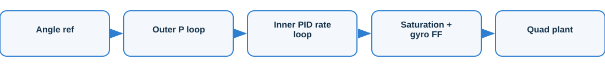
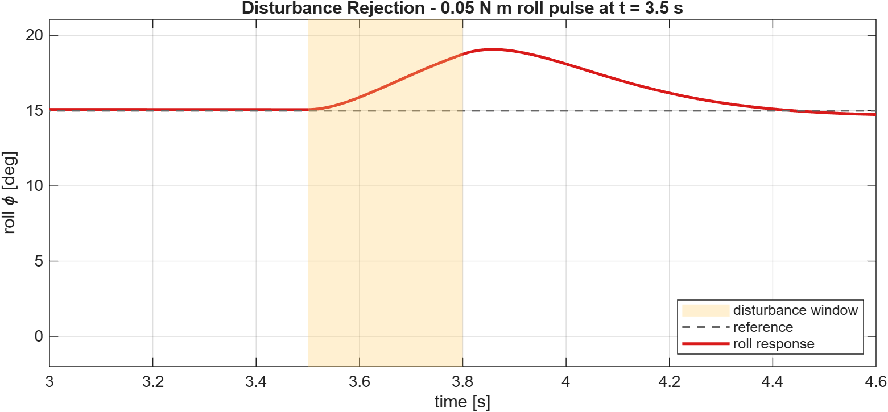

Quadcopter Attitude Controller
Cascaded PID attitude stabilisation with disturbance rejection
Overview
A 0.5 m-class quadrotor stabilised by a cascaded controller: an outer proportional angle loop sets body-rate targets, and an inner PID rate loop produces the control torques, with gyroscopic feedforward, actuator saturation and anti-windup.
The challenge
A quadrotor's attitude is open-loop unstable and cross-coupled. The controller has to be fast yet low-overshoot, and hold attitude when an external torque hits.
Approach

- Outer P angle loop generates roll/pitch/yaw rate setpoints
- Inner PID rate loop tracks them and commands body torques
- Gyroscopic decoupling feedforward and torque saturation modelled
- Tuned for a crisp response, then tested with a torque-pulse disturbance
Results
| Rise time (10-90%) | 0.45 s |
| Settling (2%) | 0.69 s |
| Overshoot | 1.2% |
| Steady-state error | 0.07 deg |
| Disturbance recovery | 0.80 s |

Interactive 3D
What it demonstrates
Demonstrates cascaded flight-control architecture, PID tuning for a low-overshoot response, actuator saturation and anti-windup handling, and quantitative evaluation.